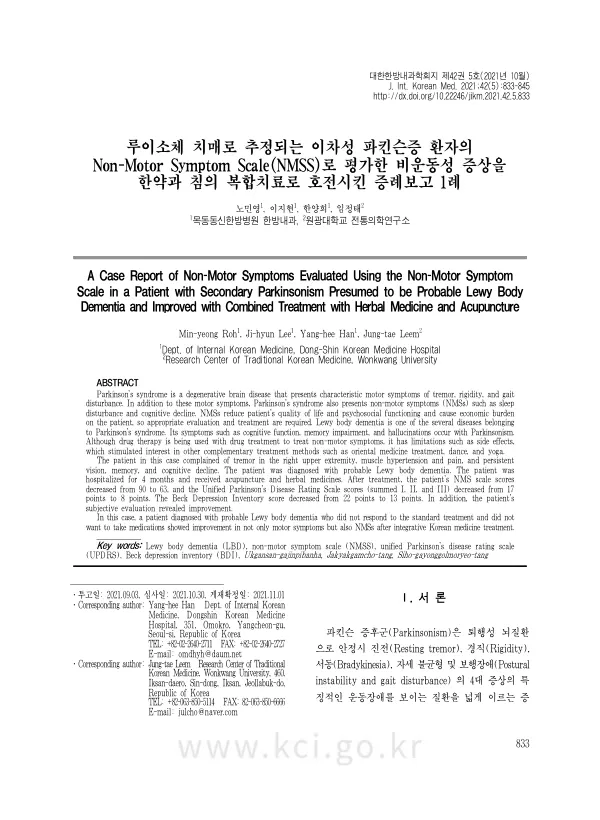

A Case Report of Non-Motor Symptoms Evaluated Using the Non-Motor Symptom Scale in a Patient with Secondary Parkinsonism Presumed to be Probable Lewy Body Dementia and Improved with Combined Treatment with Herbal Medicine and Acupuncture
Roh My, Lee Jh, Han Yh, Leem Jt
The Journal of Internal Korean Medicine 42(5):833-845

첫 장 · 오픈액세스First page · open access
논문 소개Summary
파킨슨증후군을 이야기할 때는 떨림과 경직, 서동, 자세 불안정 같은 운동 증상이 먼저 나옵니다. 그러나 수면장애와 인지 저하, 자율신경 이상, 기분 문제 같은 비운동 증상이 삶의 질을 더 크게 떨어뜨리고 경제적 부담도 큽니다. 약으로 다루기 어렵고 부작용도 따라붙습니다. 이 증례는 그 비운동 증상을 비운동증상척도로 재면서 한약과 침으로 다룬 기록입니다.
56세 남성이 2016년부터 오른팔 떨림과 인지 저하를 겪었습니다. 본태성 진전으로 진단받았다가 특발성 파킨슨병 추정으로 바뀌어 레보도파를 늘렸지만 듣지 않았고, 항콜린제를 더하자 우울증과 언어장애가 생겨 끊었습니다. 이후 환시와 근긴장으로 인한 통증이 심해졌습니다. 갑상선 기능 이상과 비케토산성 고혈당에 의한 무도병, 윌슨병, 알코올, 피질기저핵 변성, 다계통 위축증, 진행성 핵상마비를 차례로 배제하고, 인지 기능의 변동과 반복되는 환시, 자발적 파킨슨증을 근거로 유력 루이소체 치매로 진단했습니다.
간양상항으로 변증해 억간산가진피반하를 기본으로 쓰고 야간통에 작약감초탕을 더했습니다. 두 달 뒤 운동 증상은 좋아졌으나 우울과 불면의 호전이 더뎌 시호가용골모려탕으로 바꿨습니다. 침은 입원 기간 매일 한 차례, 봉약침을 놓은 뒤 자침해 20분 유침하고 족삼리와 양릉천에 2헤르츠 전침을 걸었습니다. 파킨슨 관련 양약은 환자가 거부해 쓰지 않았고 재활치료를 병행했습니다.
숫자는 그대로 적어야 합니다. 비운동증상척도는 입원 당시 90점에서 한 달 뒤 133점으로 오히려 올랐다가 두 달 뒤 81점, 석 달 뒤 63점으로 떨어졌습니다. 통합 파킨슨병 평가척도의 1·2·3부 합계는 17점에서 8점으로, 벡 우울척도는 22점에서 13점으로 내려갔습니다.
표준 치료에 반응하지 않고 양약을 원하지 않는 환자에게 다른 길이 있었다는 것이 이 기록의 뜻입니다. 다만 증례 하나이고 여러 치료를 함께 썼으며, 첫 달에 점수가 올랐다가 내려간 경과를 보면 자연 경과와 치료 효과를 가르기 어렵습니다.
Discussions of parkinsonism start with the motor symptoms — tremor, rigidity, bradykinesia, postural instability. But it is the non-motor symptoms, such as sleep disturbance, cognitive decline, autonomic dysfunction and mood problems, that cost more quality of life and carry an economic burden. They are hard to treat pharmacologically and the drugs bring side effects. This case records those non-motor symptoms being measured on the Non-Motor Symptom Scale while treated with herbal medicine and acupuncture.
A 56-year-old man had had right arm tremor and cognitive decline since 2016. Diagnosed first with essential tremor, then presumed idiopathic Parkinson's disease, he did not respond to escalating levodopa; adding an anticholinergic brought on depression and speech disturbance, so it was stopped. Visual hallucinations and pain from muscle hypertonia then worsened. Thyroid dysfunction, chorea from non-ketotic hyperglycaemia, Wilson's disease, alcohol, corticobasal degeneration, multiple system atrophy and progressive supranuclear palsy were excluded in turn, and probable Lewy body dementia was diagnosed on fluctuating cognition, recurrent visual hallucinations and spontaneous parkinsonism.
Pattern identification was ascendant liver yang. Modified Yigan-san formed the base, with Jakyakgamcho-tang added for night pain. After two months the motor symptoms had improved but depression and insomnia lagged, so the prescription was changed to Sihogayonggolmoryeo-tang. Acupuncture was given once daily throughout admission, with bee venom pharmacopuncture followed by needling retained for 20 minutes and 2 Hz electroacupuncture at ST36 and GB34. The patient refused conventional antiparkinsonian medication, and rehabilitation was provided alongside.
The numbers must be reported as they are. The Non-Motor Symptom Scale stood at 90 on admission, rose to 133 after one month, then fell to 81 at two months and 63 at three. The summed parts I, II and III of the Unified Parkinson's Disease Rating Scale fell from 17 to 8, and the Beck Depression Inventory from 22 to 13.
What this record shows is that a patient unresponsive to standard treatment and unwilling to take medication had another route available. It remains a single case using several treatments at once, and with a score that rose before it fell, the natural course cannot be separated from the treatment effect.
인용Cite
Roh My, Lee Jh, Han Yh, Leem Jt. A Case Report of Non-Motor Symptoms Evaluated Using the Non-Motor Symptom Scale in a Patient with Secondary Parkinsonism Presumed to be Probable Lewy Body Dementia and Improved with Combined Treatment with Herbal Medicine and Acupuncture. The Journal of Internal Korean Medicine. 2021;42(5):833-845. doi:10.22246/jikm.2021.42.5.833